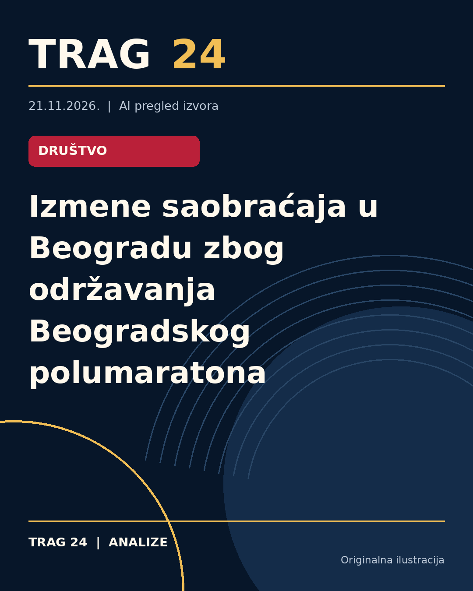

Izmene saobraćaja u Beogradu zbog održavanja Beogradskog polumaratona

ŠTA SE DOGODILO
Zbog održavanja Beogradskog polumaratona uvedene su potpune obustave saobraćaja i izmenjene su trase gradskog prevoza na više lokacija u Beogradu. Saobraćajne izmene uvedene su danas i trajaće i sutra tokom trajanja manifestacije.
HRONOLOGIJA
Potpuna obustava saobraćaja danas je na snazi od 15:30 časova do ponoći u Bulevaru Zorana Đinđića, od Ulice antifašističke borbe do Ulice španskih boraca. Sutra je obustava planirana od 7:30 do 14 časova na trasi polumaratonske trke i trke na 10.000 metara.
ŠTA NAVODE IZVORI
Iz Sekretarijata za javni prevoz saopšteno je da će tokom trajanja manifestacije važiti posebna organizacija saobraćaja i izmenjene trase javnog gradskog prevoza. Start i cilj obema trkama su u Bulevaru Zorana Đinđića, takođe u delu od Ulice antifašističke borbe do Ulice španskih boraca.
ŠTA JE POTVRĐENO
Potpuna obustava saobraćaja danas od 15:30 do ponoći i sutra od 7:30 do 14 časova, kao i detaljne rute polumaratonske trke i trke na 10.000 metara koje prolaze kroz više beogradskih bulevara i ulica. Takođe, potvrđene su izmenjene trase velikog broja gradskih autobuskih linija, između ostalih i za linije EKO 1, 7A, 9A, 15, 16, 17, 18 i drugih.
ŠTA NIJE POTVRĐENO
Nisu dostupni podaci o dodatnim bezbednosnim merama, specifičnim zatvaranjima drugih manjih saobraćajnica, niti informacije o alternativnim saobraćajnim rešenjima za privatni prevoz tokom trajanja manifestacije.
ŠTA OSTАJE OTVORENO: Potrebno je pratiti eventualne izmene u narednim danima koje bi mogle biti objavljene od strane zvaničnih gradskih službi. Takođe, ostaje otvoreno pitanje kako će izmenjene trase uticati na redovan gradski saobraćaj i da li će biti dodatnih promena u prevozu.
Izvori
- https://nova.rs/vesti/drustvo/izmene-saobracaja-u-beogradu-zbog-polumaratona-obustave-na-vise-ulica-i-promenjene-trase-gradskog-prevoza/
- https://www.danas.rs/vesti/beograd/izmena-saobracaja-beogradski-polumaraton/
- https://n1info.rs/vesti/izmene-saobracaja-u-beogradu-zbog-polumaratona/
Ova analiza je pripremljena uz pomoć veštačke inteligencije na osnovu javno dostupnih izvora. Navodi izvora nisu nužno nezavisno potvrđeni.